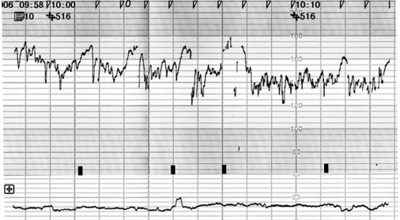
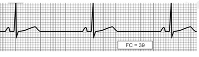
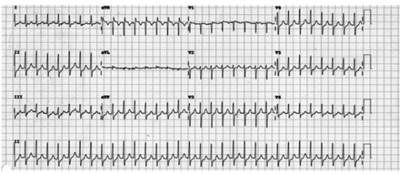
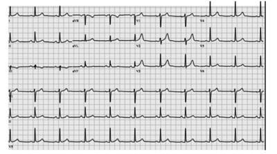
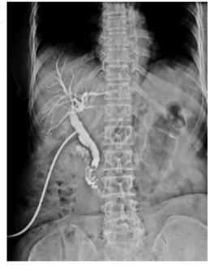
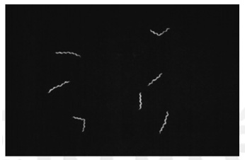

Questão 1 · Vigilância Ambiental · 4000120575Dentro do conceito de Saúde Única (One Health), há indissociabilidade entre saúde humana, animal e ambiental e, nesse contexto, segundo o Ministério da Saúde, a Vigilância em Saúde Ambiental
A não atua em riscos decorrentes de desastres que está no escopo da Vigilância Epidemiológica.
B tem procedimentos de vigilância epidemiológica das doenças e agravos à saúde humana, associados a contaminantes ambientais, como: amianto, mercúrio, benzeno e chumbo.
C tem estreita cooperação com o Ministério da Agricultura, o qual tem os procedimentos de vigilância dos trabalhadores expostos a agrotóxicos.
D atua na vigilância em saúde de trabalhadores, com exceção dos trabalhadores de indústrias químicas, área dentro do escopo da vigilância epidemiológica.
E tem estreita cooperação com as Secretarias Estaduais de Abastecimento, que são responsáveis pela vigilância da qualidade da água de abastecimento.
Questão 2 · Política Nacional de Atenção Básica PNAB · 4000120567O Ministério da Saúde mapeou a situação vacinal de sarampo de 6,5 milhões de crianças de seis meses a menores de cinco anos para
A cortar a verba para ações locais de vacinação repassada aos municípios que constam da lista disponível no e- Gestor Atenção Básica.
B otimizar o Programa Bolsa-Família, cortando do programa as famílias que não atenderam o critério de vacinação in- fantil.
C publicar a lista de crianças não vacinadas, de modo que as famílias procurem de forma ativa as unidades de saúde para a devida vacinação infantil.
D potencializar o trabalho dos Agentes Comunitários de Saúde e Agentes de Combate às Endemias na busca ativa dessas crianças.
E que as equipes de Saúde da Família e os profissionais que atuam nas unidades de Atenção Primária à Saúde se preparem para a forte demanda que partirá das famílias denunciadas na lista.
Questão 3 · Calendário vacinal do idoso · 4000120561Segundo o Calendário Nacional de Vacinação, as vacinas para pessoas com 60 anos ou mais, além da vacina anual contra influenza, são:
A hepatite B, febre amarela, dupla adulto, pneumocócica 23 valente.
B tríplice viral, febre amarela, pneumocócica 15 valente.
C meningocócica C, hepatite B, febre amarela, dupla adulto.
D hepatite A, dupla adulto, febre amarela, pneumocócica 10 valente (conjugada).
E DTP (difteria, tétano e coqueluche), febre amarela, pneumocócica 10 valente (conjugada).
Questão 4 · Índice de Vulnerabilidade Social IVS · 4000120557O Índice de Vulnerabilidade Social (IVS)
A é calculado pelo Ministério da Saúde apenas para Municípios com baixo Índice de Desenvolvimento Humano Municipal (IDHM), como um subsídio para planejamento de ações em saúde.
B tem o foco em uma situação: pobreza, entendida como insuficiência de recursos monetários e único indicador de exclusão e vulnerabilidade social.
C classifica os municípios em vulnerabilidade: muito baixa, baixa, média, alta e muito alta, com escala de valores entre zero e um e, quanto mais próximo a zero, maior é a pobreza do município.
D apresenta a desvantagem de não considerar mortalidade como um indicador de vulnerabilidade.
E tem 16 indicadores estruturados em: infraestrutura urbana, capital humano e renda e trabalho.
Questão 5 · Valor Preditivo Positivo · 4000120550Um marcador sorológico deve predizer a ocorrência de uma determinada doença ou infecção, e diante de um resultado positivo, a probabilidade do indivíduo ser realmente doente é dado por
A especificidade
B valor preditivo negativo
C sensibilidade
D valor preditivo positivo
E precisão
Questão 6 · Outras normativas do SUS e da Saúde em geral · 4000120546Sobre os princípios gerais que orientam gestores das três esferas da Federação na organização de suas atividades de planejamento no Sistema Único de Saúde é correto afirmar:
A O planejamento consiste em uma atividade facultativa ao Município, pois o processo de planejamento em saúde é de responsabilidade da União.
B O planejamento deve ser ascendente e integrado, sendo os planos municipais, elaborados a partir das definições estabelecidas nas conferências municipais de saúde, a base para o planejamento das regiões de saúde.
C O planejamento não deve ser necessariamente integrado à Seguridade Social e ao planejamento governamental geral.
D As comissões intergestores regionais, bipartite e tripartite devem acatar o planejamento feito pelos gestores municipais, estaduais e federais.
E A avaliação do efeito sobre a população inclui a efetividade, que é sinônimo de eficácia e eficiência.
Questão 7 · Violência · 4000120540Prevenir a violência contra as mulheres é tarefa das mais complexas e envolve diferentes pro ssionais de atenção atuando junto a essa população que precisa saber os mitos e verdades sobre a violência doméstica. Nesse contexto, é correto afirmar que é
A uma verdade: a violência doméstica ocorre muito esporadicamente.
B um mito: se a situação fosse realmente tão grave, as vítimas abandonariam logo seus agressores.
C uma verdade: a violência doméstica é um problema exclusivamente familiar, pois estes assuntos são tratados no ambiente doméstico.
D uma verdade: a violência só acontece entre as famílias de baixa renda e baixo nível de instrução formal.
E um mito: é difícil identificar o tipo de mulher que é exposta à violência.
Questão 8 · Lista Nacional de Notif icação Compulsória de doenças agravos e eventos de saúde pública · Violência · 4000120536Sobre notificação de casos de violência, no âmbito do Sistema Único de Saúde,
A é obrigatória para caso de violência doméstica/intrafamiliar, sexual, autoprovocada, tráfico de pessoas, trabalho escravo, trabalho infantil, tortura, intervenção legal e violências homofóbicas contra mulheres e homens em todas as idades.
B é obrigatória no caso de violência extrafamiliar/comunitária; somente serão objetos de notificação as violências contra homens em todas as idades.
C é obrigatória, apenas, para violências contra crianças, pessoas idosas e pessoas com deficiência física.
D não é obrigatória para caso de violência doméstica/intrafamiliar, sexual e autoprovocada.
E a ficha de notificação será única para todos os casos desse evento que envolvam mais de uma vítima.
Questão 9 · Prevenção Secundária · 4000120527Uma usuária, sem queixas clínicas e aparentando estar em ótimas condições de saúde, dirige-se ao serviço de saúde para solicitar um atestado médico de aptidão física para realização de exercício físico. O médico a atende, emite o atestado solicitado e aproveita para conversar sobre detecção precoce de câncer. A atitude do médico é
A incorreta, pois a conversa sobre detecção precoce de câncer deve ser feita pela equipe de saúde da família que tem mais proximidade com o usuário.
B correta, pois ele fez uma atividade de prevenção terciária.
C incorreta, pois detecção precoce se trata de rastreamento por testes em pessoas sintomáticas.
D incorreta, pois a demanda do atendimento não foi por cuidado médico, mas sim para atestado de saúde.
E correta, visto que rastreamento é parte da detecção precoce e pode ser abordado mesmo quando não há demanda por cuidado.
Questão 10 · Prevenção Quaternária · 4000120520Um médico que resiste à forte demanda de exames para diagnóstico e de rastreamento desnecessários, bem como, à pressão da corporação farmacêutica e tecnológica, presente nos dias atuais, está atuando em prevenção
A básica
B primária
C secundária
D terciária
E quaternária
Questão 11 · Lista Nacional de Notif icação Compulsória de doenças agravos e eventos de saúde pública · 4000120517Esquistossomose Segundo o Sistema de Vigilância da Esquistossomose,
A a definição de caso suspeito é um indivíduo residente em (e/ou procedente de) área endêmica, com quadro clínico sugestivo das formas aguda, crônica ou assintomática, com história de contato com as coleções de águas onde existam caramujos eliminando cercárias.
B apenas casos de formas graves da doença são de notificação compulsória em todo o país.
C após concluída a investigação, o caso deverá ser classificado como indeterminado, se o caso notificado não tiver con- firmação laboratorial.
D a Ficha de Investigação da Esquistossomose deve ser preenchida com dados clínicos e laboratoriais do caso e, apenas em caso de surto deve ser seguido um roteiro expandido de investigação para identificação da área de transmissão.
E uma estratégia de prevenção é o tratamento de todos os indivíduos moradores do bairro onde houve caso da doença.
Questão 12 · Prof ilaxia préexposição PrEP · Prof ilaxia pósexposição PEP · 4000120495Sobre as medidas específicas a serem adotadas para profilaxia pré e pós-exposição ao HIV (PrEP e PEP) é correto afirmar:
A A PrEP consiste na utilização de dose alta e mensal de antirretroviral para grupos específicos não infectados que tenham maior risco de infecção pelo HIV, como homens que fazem sexo com homens.
B O esquema antirretroviral de PEP é recomendado por categoria de exposição: acidente com material biológico, violência sexual e exposição sexual consentida.
C A PrEP se insere como uma estratégia adicional, segura e eficaz de prevenção, mas ainda indisponível no Sistema Único de Saúde.
D PEP é uma estratégia de prevenção para evitar novas infecções pelo HIV, por meio do uso temporário de medicamentos antirretrovirais após uma exposição de risco à infecção pelo HIV.
E A PrEP é a terapia antirretroviral para evitar transmissão vertical do HIV, oferecida a todas as gestantes infectadas pelo HIV e suspensa após o parto.
Questão 13 · Tratamento · 4000120488A quimioprofilaxia para doença meningocócica
A assegura efeito protetor absoluto e prolongado e, por isso, tem sido adotada como uma medida eficaz na prevenção de casos secundários.
B é feita com ciprofloxacino, que deve ser administrado na dose de 5 mg/kg/dia, e simultaneamente a todos os contatos próximos, preferencialmente, até 48 horas da exposição à fonte de infecção (doente).
C é uma medida para prevenção de casos secundários, que são raros e, geralmente, ocorrem nas primeiras 48 horas a partir do primeiro caso.
D é recomendada para todos os profissionais da área de saúde que atenderam o caso de doença meningocócica.
E é recomendada para contatos próximos, como: moradores do mesmo quarteirão, moradores de alojamentos, quartéis, comunicantes de creches e escolas e pessoas diretamente expostas às secreções do paciente.
Questão 14 · Diagnóstico laboratorial · Complicações · 4000120479Para um caso de paciente com Síndrome Respiratória Aguda Grave (SRAG), internado em Unidade de Terapia Intensiva (UTI) de unidade de saúde sentinela decorrente de influenza sazonal,
A a notificação no Sistema de Informação da Vigilância Epidemiológica da Gripe (SIVEP-Gripe) não deve ser realizada, mas apenas na ocorrência de surto.
B os tratamentos com antivirais, não conseguem reduzir a duração dos sintomas, principalmente, em pacientes com imunossupressão.
C a notificação como caso confirmado só pode ocorrer se houver confirmação laboratorial.
D o diagnóstico laboratorial, pela pesquisa de vírus da influenza, é um dos componentes da vigilância sentinela de SRAG em UTI e vigilância universal da SRAG em pacientes hospitalizados.
E a identificação do vírus em laboratório não é importante para a vigilância, uma vez que é sempre o vírus C, antigeni- camente estável, o agente etiológico da SRAG.
Questão 15 · Tipos de Estudos Epidemiológicos · 4000120471Com os dados da Pesquisa Nacional de Saúde (PNS), foi realizado um estudo para identi car, dentro outras, associações da dor crônica na coluna com características sociodemográ cas e estilos de vida, por sexo. Concluiu-se que os dados da PNS mostram que, aproximadamente, um quinto da população brasileira referiu dor crônica de coluna. Alguns resultados foram: 18,5% da população brasileira referiram dor crônica na coluna, sendo 15,5% (IC95% 14,7-16,4) em homens e 21,1% (IC95% 20,2–22,0) em mulheres. Encontrou-se um e atividade física (MALTA et al., Rev. Saúde Pública, 2017). Com base nessas informações, este estudo:
A teve como critério de inclusão: dor na coluna.
B é transversal.
C mostra que a prevalência do desfecho não diferiu segundo o sexo.
D teve intervalo de confiança (IC) muito baixo para idade, escolaridade e atividade física.
E nenhuma associação foi estatisticamente significativa.
Revisar: possível letra faltando em enunciado
Questão 16 · Pesquisa Nacional de Saúde do Escolar PeNSE · 4000120451Muitas questões prioritárias para pautar políticas públicas voltadas para a promoção da saúde em crianças e adolescentes têm subsídio nos dados da Pesquisa Nacional de Saúde do Escolar (PeNSE), do Ministério da Saúde, a qual
A faz parte das ações de investigação da frequência e distribuição de fatores de risco e proteção para doenças transmissíveis entre crianças até 12 anos de idade matriculadas em escolas públicas e privadas.
B é realizada com escolares adolescentes, de escolas públicas e privadas, em parceria com o Instituto Brasileiro de Geografia e Estatística e com o apoio do Ministério da Educação.
C está sendo realizada, em 2019, com questionários que abordam fatores de risco domiciliares para doenças transmissíveis, entre eles: água encanada, esgoto sanitário, número de pessoas vivendo sob o mesmo teto e presença de animais no peridomicílio.
D foi composta em 2019, apenas, de crianças matriculadas em escolas públicas, e os resultados serão comparados a dados internacionais compilados de pesquisas realizadas em vários países.
E visa avaliar fatores de risco, somente, para doenças de transmissão sexual entre estudantes de escolas públicas, de 15 a 17 anos, faixa etária em que os alunos têm comportamentos, relativamente, semelhantes.
Questão 17 · Vigitel · 4000120431Uma paciente durante uma consulta médica está muito agitada e relata que, possivelmente, foi vítima de um trote telefônico em um feriado. Conta que um funcionário de uma empresa ligou para seu telefone xo, convidando-a para uma pesquisa (chamada Vigitel) do Ministério da Saúde. O funcionário comentou que os resultados iriam ser publicados sem identi cação dos participantes e perguntou quantos adultos moravam na residência, idade, sexo, escolaridade, estado civil e raça/cor, atividade física e sobre o hábito de fumar de cada um deles. O médico informa corretamente à paciente que
A a Vigitel é um sistema que o Ministério da Saúde mantém para avaliação dos dados demográficos da população adstrita, não havendo contato via telefone.
B a Vigitel é um sistema de vigilância do Ministério da Saúde que faz inquéritos apenas presenciais após marcar horário da visita para aplicação de questionários.
C de fato, ela foi vítima de um golpe, pois o Ministério da Saúde não contrataria uma empresa para realizar qualquer pesquisa por telefone.
D de fato, ela foi vítima de um golpe, pois a Vigitel é uma ferramenta que o Ministério da Saúde disponibiliza aos usuários para comunicação telefônica em caso de inundações, apenas.
E a Vigitel compõe o sistema de Vigilância de Fatores de Risco para doenças crônicas não transmissíveis, e esse telefonema recebido é procedimento correto.
Questão 18 · Filtro especial identif icando o tipo de estudo epidemiológico pela descrição da metodologia · 4000120423Em uma investigação de surto com 5 casos de uma determinada doença, foram recrutados pacientes com a doença e pessoas que não tiveram a doença. Foram feitas perguntas sobre os fatores de risco/exposição compatíveis com o agente etiológico da doença e seu modo de transmissão, buscando-se identi car os fatores de risco associados. O estudo em questão é:
A coorte
B ecológico
C caso controle
D descritivo
E inadequado, pelo número de casos
Questão 19 · Política Nacional de Atenção Básica PNAB · 4000120414Em uma equipe de atenção básica no pré-natal, verifica-se que: 1. Agente comunitário de saúde: acompanha as gestantes que não estão realizando o pré-natal na unidade básica de saúde local, mantendo a equipe informada sobre o andamento do pré-natal realizado em outro serviço. 2. Auxiliar de enfermagem: aplica vacinas antitetânica e contra hepatite B. 3. Técnico de enfermagem: fornece medicação mediante receita, assim como os suplementos padronizados para o programa de pré-natal (sulfato ferroso e ácido fólico). 4. Enfermeira: solicita exames complementares de acordo com o protocolo local de pré-natal e, também, prescreve suplementos padronizados para o programa de pré-natal (sulfato ferroso e ácido fólico). 5. Médico: realiza o cadastramento da gestante no SisPreNatal e fornece o Cartão da Gestante, devidamente preenchido (o cartão deve ser verificado e atualizado a cada consulta). A respeito das atividades descritas de 1 a 5:
A todas as atividades estão corretamente descritas e com o profissional de saúde correto.
B a atividade 5, descrita para o médico, está incorreta.
C a atividade 4, descrita para a enfermeira, está incorreta.
D a atividade 3, descrita para o técnico de enfermagem, está incorreta.
E as atividades 1 e 2, descritas para o agente comunitário de saúde e para o auxiliar de enfermagem, respectivamente, estão incorretas.
Questão 20 · Hierarquia das Evidências · 4000120404De acordo com a United States Preventive Services Task Force (USPSTF), uma recomendação Grau B, como auxílio para os médicos na tomada de decisões clínicas quanto aos cuidados de pacientes idosos, é um rastreio do aneurisma da aorta abdominal por ultrassonografia em homens de 65 a 75 anos que sempre fumaram. Isso significa que a USPSTF
A recomenda o serviço. Há uma grande certeza de que o benefício é moderado ou há moderada certeza de que o benefício é moderado ou substancial.
B recomenda esse serviço. Há uma grande certeza de que o benefício é substancial.
C recomenda contra o serviço. Há moderada ou grande certeza de que, com o serviço, não há benefício ou de que os malefícios superam os benefícios.
D conclui que a evidência atual é insuficiente para o balanço entre os benefícios e prejuízos do serviço. A evidência é escassa, de má qualidade ou conflitante. O equilíbrio entre benefícios e prejuízos não pode ser determinado.
E recomenda contra o uso rotineiro do serviço. Há considerações de que o suporte deva ser providenciado para o paciente de modo individual. Há uma grande ou moderada certeza de que o benefício é pequeno.
Questão 21 · Exames laboratoriais · Assistência prénatal · Obstetrícia · 4000120397A assistência ao pré-natal nas gestações saudáveis é fundamental, pois garante o bem estar materno-fetal. O Ministério da Saúde recomenda solicitar os seguintes exames:
A ferritina, glicemia de jejum, insulina e cálcio.
B colesterol total e frações, triglicérides, TSH e hemograma completo.
C sorologia para hepatite B, VDRL, teste rápido de HIV, tipagem sanguínea.
D tipagem sanguínea, sorologia para hepatite B, transaminases hepáticas.
E sódio, potássio, creatinina, VDRL, teste rápido de HIV, TSH.
Questão 22 · Técnicas de esvaziamento uterino · Conduta espectante · Aborto retido · 4000120387Considera-se conduta adequada no aborto retido na 8a semana de gestação:
A Orientar a paciente para aguardar a eliminação fisiológica por até 40 dias em uso de antibioticoprofilaxia.
B Indicar curetagem uterina pelo risco de fenômenos tromboembólicos nos primeiros 7 dias.
C Orientar a paciente em relação à possibilidade de aguardar a eliminação fisiológica ou esvaziamento uterino com ou sem preparo do colo uterino.
D Repetir a ultrassonografia semanalmente para observar absorção fisiológica do feto, por até 40 dias.
E Prescrever misoprostol diariamente até a eliminação espontânea dos restos placentários.
Questão 23 · Pontos de ref erência da apresentação f etal · 4000120377Está correta a apresentação fetal e o respectivo ponto de referência:
A cefálica fletida
B cefálica defletida de segundo grau
C cefálica defletida de terceiro grau
D cefálica defletida de primeiro grau
E córmica
Questão 24 · Criterios diagnósticos da préeclampsia · 4000120352Gestante, 38 semanas, desejosa de parto normal, observou há 1 dia cefaleia, edema de membros inferiores e aumento súbito da pressão arterial sistêmica, que chegou a 140 90 mmHg na admissão da maternidade. Em relação ao quadro clínico e a via de parto, recomenda-se:
A Prescrição de anti-hipertensivos e parto instrumentalizado (fórceps ou vácuo) para diminuir os riscos de acidente vascular cerebral, com 39 semanas de gestação.
B Parto cesárea de urgência com anestesia geral.
C Prescrição de anti-hipertensivos e parto cesárea programado com 39 semanas.
D Aguardar o trabalho de parto fisiológico, fazendo exames de vitalidade fetal a cada 72 horas, e conduzir o parto vaginal em tempo oportuno.
E Parto via vaginal, preferencialmente, não havendo contraindicação para procedimentos de maturação cervical imediata.
Questão 25 · Fases clínicas do parto · Obstetrícia · Terceiro período dequitação · 4000120336O terceiro período de parto
A corresponde ao período desde a saída do recém-nascido até a saída da placenta e membrana amniótica.
B é considerado prolongado quando demorar mais de 10 minutos para a saída da placenta.
C corresponde ao período de desprendimento do pólo cefálico até o desprendimento completo do polo pélvico do recém-nascido.
D demora normalmente 2 horas nas nulíparas e até 1 hora nas multíparas.
E é abreviado pelo uso de oxitocina endovenosa.
Questão 26 · Doenças de vagina · 4000120328Nas afecções que acometem a vagina:
A A principal neoplasia maligna vaginal é o adenocarcinoma de células claras, que se manifesta na pós-menopausa.
B Cistos vaginais raramente se manifestam clinicamente e, quando ocorrem, têm grande chance de malignidade.
C Formações verrucosas são comuns, principalmente no 1/3 médio da vagina e se manifestam por sangramentos irregulares.
D Os quadros infecciosos são os mais prevalentes, principalmente a candidíase, a vaginose bacteriana e a infecção por HPV.
E Os prolapsos das paredes vaginais aumentam o risco de aparecimento de câncer na vagina, por alteração do pH.
Questão 27 · Síndrome prémenstrual · 4000120322Paciente de 18 anos, IGIP (parto normal há 2 anos), em união consensual, refere ciclos menstruais regulares e cólicas menstruais no primeiro dia da menstruação desde o parto, que não melhoram com analgésicos. Diagnóstico e conduta indicados:
A Dismenorreia primária dosar CA125 e prescrever dienogeste.
B Dismenorreia secundária prescrever anti-inflamatórios não hormonais.
C Endometriose indicar videolaparoscopia.
D Dor pélvica crônica prescrever fisioterapia pélvica.
E Adenomiose prescrever análogos de GnRH.
Questão 28 · Terapia hormonal · 4000120313Em relação à terapia hormonal da pós-menopausa (TH) em mulheres com síndrome metabólica, está correto a rmar que a TH
A oral com tibolona tem poucos riscos cardiovasculares nas mulheres hipertensas, diabéticas e obesas acima dos 65 anos de idade.
B estroprogestativa nos primeiros anos de pós-menopausa aumenta os riscos cardiovasculares nas mulheres com hipercolesterolemia.
C progestagênica em mulheres histerectomizadas aumenta os níveis pressóricos.
D transdérmica é preferível para mulheres com hipertensão, hipertrigliceridemia, obesidade, diabetes ou síndrome metabólica.
E estroprogestativa diminui os riscos cardiovasculares nas mulheres acima dos 65 anos de idade.
Questão 29 · Anticoncepção hormonal apenas com progesterona · Dispositivos intrauterinos · 4000120308M.I., 18 anos, em uso de pílula combinada, gostaria de usar um método contraceptivo de longa ação e reversível. Das opções abaixo, a que se aplica ao desejo dela é
A anel vaginal.
B DIU de cobre.
C adesivo transdérmico.
D injetável trimestral subcutâneo.
E injetável mensal intramuscular.
Questão 30 · Cistite · 4000120300J.B., 31 anos, procurou o pronto-socorro com disúria e polaciúria há 2 dias. Recebeu um receituário com antibiótico. Seguindo as novas diretrizes de tratamento de cistite urinária não complicada, o antibiótico receitado deve ser
A fosfomicina-trometamol em dose única.
B levofloxacino 750 mg por 5 dias.
C macrodantina 100 mg à noite ao se deitar por 7 dias.
D norfloxacino 250 mg 12/12 horas por 7 dias.
E ampicilina 500 mg 8/8 horas por 3 dias.
Questão 31 · Def inição · 4000120290Em paciente com dor pélvica crônica cujo diagnóstico clínico é de endometriose, espera-se encontrar, com maior frequência, focos de endometriose
A nas tubas uterinas.
B nos paramétrios laterais.
C no intestino delgado.
D nos ureteres.
E nos ligamentos uterossacros.
Questão 32 · Tratamento · Estadiamento · Tratamento · 4000120278Mulher de 39 anos de idade, IIG,IIP, apresenta lesão intraepitelial de alto grau de colo do útero em exame citológico. A colposcopia identi ca área de mosaico adentrando o canal endocervical. A biópsia da lesão é compatível com microinvasão estromal. O passo seguinte é
A histeroscopia diagnóstica.
B histerectomia total.
C repetir colposcopia com estrogenioterapia.
D curetagem uterina.
E conização.
Revisar: possível letra faltando em enunciado
Questão 33 · Prolapsos de órgãos pélvicos · 4000120265Comparando-se as queixas clínicas de pacientes com prolapso genital estádio I a IV, pode-se observar que mulheres com estadio
A I têm mais dificuldade em segurar flatos.
B II têm mais obstipação intestinal.
C IV têm mais dificuldade em esvaziar a bexiga.
D III têm mais perda de urina aos esforços.
E I têm mais sangramento por úlcera de decúbito.
Questão 34 · Úlceras genitais · 4000120255Paciente de 18 anos de idade refere que estava assintomática até 5 dias atrás, quando notou aparecimento de ferida de 2 cm na vulva. Refere que se relaciona sexualmente com outras mulheres. Segundo o Ministério da Saúde, deve-se:
A biopsiar a borda da úlcera antes de indicar tratamento.
B coletar sorologias para infeções sexualmente transmissíveis para orientar o tratamento.
C coletar material da úlcera para exame a fresco para orientar o tratamento.
D medicar com aciclovir por via oral e tópica.
E medicar a paciente com penicilina e azitromicina.
Questão 35 · Descarga papilar · 4000120243Mulher de 45 anos de idade queixa-se de saída de secreção amarelada pelos mamilos. Refere menopausa aos 43 anos e, desde então faz uso de terapia estroprogestativa por adesivos transdérmicos. Ao exame, observa-se saída de secreção espessa e esverdeada, por vários ductos em ambos os mamilos, durante expressão. O diagnóstico mais provável é de:
A adenoma de hipófise.
B carcinoma ductal invasivo.
C ectasia ductal.
D alterações fibrocísticas de mamas.
E carcinoma in situ.
Questão 36 · Medicamentoso · 4000120235Gestante de 25 semanas, com teste oral de tolerância à glicose compatível com diabetes gestacional, foi orientada a fazer dieta e atividade física e vem seguindo rigorosamente as orientações. Está monitorando a glicemia capilar em seu domicílio. Na consulta do mês seguinte, apresenta glicemias de jejum entre 96 e 120 mg/dL e pós-prandiais entre 142 e 180 mg/dL. Indica-se
A introdução de insulina.
B introdução de metformina.
C manutenção da dieta e exercícios físicos sem alterações.
D redução da ingestão de calorias e introdução de metformina.
E aumento da atividade física e introdução de metformina.
Questão 37 · Clínico · 4000120230Para tratamento conservador da gravidez ectópica íntegra, é correto afirmar que
A a embolização de artérias uterinas é indicada nos casos de massa anexial em expansão.
B o cloreto de potássio pode ser injetado em massa anexial que for menor que 3 cm.
C o misoprostol pode ser empregado por via vaginal nos casos em que a massa anexial é inferior a 3 cm e não há batimentos cardíacos fetais.
D o metotrexato pode ser usado por via intramuscular se a massa tubária for menor que 3,5 cm e o beta-hCG menor que 5.000 mUI/mL.
E a exérese do segmento tubário afetado por meio de videolaparoscopia preserva mais adequadamente o futuro reprodutivo.
Questão 38 · Assistência prénatal · Ausculta batimentos cardíacos f etais BCF · Obstetrícia · 4000120223Gestante de 13 semanas chega ao pré-natal sem queixas. O médico não consegue ouvir os batimentos cardíacos fetais com o Pinard. É correto afirmar que os batimentos não estão audíveis pois
A com 13 semanas, o coração fetal só é audível por meio de ultrassonografia com doppler.
B nessa idade gestacional a ausculta fetal deve ser feita com o sonar.
C deve ter ocorrido óbito fetal.
D o feto deve estar em apresentação anômala.
E o útero deve ser retrovertido.
Questão 39 · Assistencia ao parto pélvico · 4000120218Durante o parto vaginal em apresentação pélvica, a manobra usada após a saída do polo pélvico é
A erguimento do tronco, com o dorso fetal em direção à pube, colocando o diâmetro bisacromial transversalmente à bacia.
B abaixamento do polo pélvico e deslocamento lateral do dorso fetal para liberação dos ombros.
C tração em direção inferior do dorso fetal até que o diâmetro bisacromial fique em sentido perpendicular ao diâmetro transverso da bacia.
D tração leve e constante do polo pélvico, oscilando lateralmente repetidas vezes até o desprendimento dos ombros.
E posicionamento do dorso fetal para baixo em direção à fúrcula vaginal para o desprendimento das espáduas.
Questão 40 · Conduta · Interpretação · 4000120210Gestante de 37 semanas refere diminuição da movimentação fetal há um dia. O exame físico geral não mostra alterações e o exame obstétrico é compatível com a idade gestacional. Realiza-se cardiotocogra a, em que a paciente registra 4 episódios de movimentação fetal, como mostrado na imagem abaixo. É correto afirmar que essa cardiotocografia

A é suspeita para início de hipóxia fetal, devendo-se induzir o parto.
B tem padrão tranquilizador e a paciente pode observar a movimentação fetal em casa.
C mostra início de trabalho de parto, devendo-se internar a paciente para monitoração do bem-estar fetal.
D mostra desacelerações tardias, sendo indicada resolução do parto nesse momento.
E mostra desacelerações variáveis, sendo indicada cesárea.
Questão 41 · Indicações · Indicação · 4000120200Durante a orientação para alta, um paciente internado na enfermaria apresenta lesões de pele compatíveis com varicela. No mesmo quarto, estão internados mais 2 pacientes imunocompetentes, susceptíveis e não vacinados: (A) com 5 meses de idade e (B) com 10 meses de idade. Considerando que o caso índice receberá alta hospitalar, além do isolamento com precaução para contato, gotículas e aerossóis, a melhor conduta, dentre as abaixo, em relação aos pacientes comunicantes A e B é
A Paciente A vacina contra varicela; Paciente B vacina contra varicela
B Paciente A imunoglobulina humana antivaricela-zoster; Paciente B vacina contra varicela
C Paciente A vacina contra varicela; Paciente B imunoglobulina humana antivaricela-zoster
D Paciente A imunoglobulina humana antivaricela-zoster; Paciente B imunoglobulina humana antivaricela-zoster
E Paciente A imunoglobulina humana antivaricela-zoster, se apresentar sintomas; Paciente B imunoglobulina humana antivaricela-zoster, se apresentar sintomas
Questão 42 · Síndrome torácica aguda · 4000120163Paciente de 5 anos de idade, com história de anemia falciforme (HbSS), é levado para atendimento médico com queixa de tosse, dor torácica e febre de 38,7 C há 1 dia. Estava assintomático havia 4 meses. Ao exame físico apresenta-se descorado moderado, anictérico, acianótico, afebril. Ausculta pulmonar: discretos sibilos bilaterais e poucos roncos. Tiragem subcostal leve. Ausculta cardíaca e propedêutica abdominal sem alterações significativas. Pulsos cheios e perfusão periférica de 2 segundos. Rx de tórax com in ltrado leve em bases bilateralmente, principalmente à direita. Gasometria arterial com saturação 90% em ar ambiente. Hemoglobina: 8,1 g/dL e Hematócrito 25,4%. Após o início de oxigenioterapia e analgesia adequada, a melhor conduta para esse paciente, dentre as abaixo, é:
A Alta hospitalar com amoxicilina oral, broncodilatador e analgesia.
B Penicilina cristalina e expansão volêmica com cristaloide.
C Vancomicina e expansão volêmica com plasma fresco congelado.
D Corticoide, oseltamivir e expansão volêmica com cristaloide.
E Ceftriaxone, claritromicina e transfusão de concentrado de hemácias.
Questão 43 · Lúpus Eritematoso Sistêmico Pediátrico · 4000120148Menina de 8 anos de idade foi internada para investigação de febre não aferida há 3 meses. Mãe refere que criança apresentou febre alguns dias sim e outros não. Neste período, iniciou edema das mãos e pés e manchas na região das coxas bilateralmente e na face (rush malar). Fez uso de “antialérgico” e prednisolona por dois dias com alguma melhora, mas as manchas e edema retornaram após término da medicação. Refere ainda aparecimento de aftas dolorosas orais, que se intensi caram há 3 dias. Paciente apresenta bom estado geral, sem alterações cardiopulmonares significativas, fígado a 2,5 cm do rebordo costal, rush cutâneo em face, principalmente região malar, e em membros inferiores. Os exames mostram anemia leve, leucopenia com linfopenia discreta, sem plaquetopenia. Fator antinuclear positivo, anticorpo anti-DNA positivo, anticorpo anticardiolipina posi- tivo, VDRL positivo. Complementos CD3, CD4 e CH50 baixos. O melhor tratamento para esse caso, dentre os abaixo, é:
A Prednisolona e hidroxicloroquina.
B Prednisolona e anti-histamínico.
C Anti-histamínico e rituximabe.
D Prednisolona e anti-histamínico.
E Anti-histamínico e aciclovir.
Questão 44 · RNs menores de 34 semanas · 4000120144Gestante com 35 anos de idade, internada em uso de drogas hipotensoras, idade gestacional de 33 semanas e 6 dias evolui com pré-eclâmpsia grave e tem a cesárea indicada. A equipe de neonatologia é avisada do caso e recebe o recém-nascido pré- termo, que após a total extração do corpo materno mostra-se ativo e com choro vigoroso. A melhor conduta para esse caso, dentre as abaixo, é:
A Monitorizar o recém-nascido quanto a apneia e/ou respiração irregular, o que indica intubação, que deve ser realizada nos primeiros 60 segundos de vida.
B Manter a sala de parto com temperatura entre 23 e 25 C, envolver o corpo do recém-nascido em saco plástico transparente, secá-lo e colocar touca.
C Deixar o recém-nascido posicionado no abdome materno e colocar o sensor do oxímetro de pulso no membro superior esquerdo.
D Deixar o recém-nascido posicionado no tórax materno e clampear o cordão umbilical de imediato.
E Deixar o recém-nascido aquecido e posicionado no abdome materno por 30 segundos antes de clampear o cordão umbilical.
Questão 45 · Cirurgia Inf antil · Atresias e Estenoses Duodenais · Cirurgia · 4000120133O neonatologista é chamado para avaliar um recém-nascido com 16 horas de vida no alojamento conjunto. A mãe relata que o bebê apresentou vômitos amarelos 3 vezes. Nasceu de parto normal, com Apgar 9/10, peso de 2.490 g e idade gestacional pelo Capurro de 37 semanas. A mãe é primigesta, fez duas consultas de pré-natal, pois descobriu a gravidez tardiamente, mas nega qualquer intercorrência na gestação. Ao exame físico, o recém-nascido está ativo, hidratado, com boa perfusão, abdome leve- mente distendido, não eliminou mecônio. O médico solicita uma radiogra a de abdome mostrada abaixo. Dentre as alternativas abaixo, a hipótese diagnóstica mais provável é:

A estenose hipertrófica de piloro.
B atresia de duodeno.
C pâncreas anular.
D má rotação intestinal.
E atresia jejuno ileal.
Questão 46 · Conduta · 4000120122Primigesta dá à luz recém-nascido de parto normal, sexo feminino, Apgar de 9 e 10 nos 1o e 5o minutos, respectivamente. Pe- sou 2.748 g e a idade gestacional pelo Capurro foi de 38 semanas e 1 dia. Com 23 horas de vida, no alojamento conjunto, o pediatra observou que a mãe exibia mamilos planos e que o recém-nascido apresentou perda ponderal de 3%. Optou-se por manejo clínico da amamentação e glicemia capilar de controle. Com 48 horas de vida, o recém-nascido encontra-se ativo, irritado, com boa sucção ao teste do dedo enluvado; perda ponderal de 4,8% e valores de glicemia capilar das últimas 24 horas: 51, 45 e 44 mg/dL. A melhor conduta, dentre as abaixo, para esse recém-nascido é:
A Complementar as mamadas com fórmula para manter a glicemia > 60 mg/dL.
B Oferecer fórmula por sonda orogástrica e fazer o controle da glicemia.
C Prescrever soro de manutenção com VIG de 6 mg/kg/min.
D Manter o aleitamento materno exclusivo com controle da glicemia por mais 24 horas.
E Manter o aleitamento e fazer um push de glicose com VIG de 10 mg/kg/min.
Questão 47 · Aspectos Clínicos Quadro clínico e Diagnóstico · 4000120107J.P.S., sexo masculino, 2 anos de idade, tem história de febre (38,5 °C) há sete dias. A mãe notou também o aparecimento de vermelhidão nas mãos e nos pés, manchas no tronco, e olhos vermelhos. Procurou a Unidade de Pronto Atendimento para elucidação diagnóstica. Ao exame físico, foi observado eritema, edema e descamação em mãos e pés, exantema maculopapular em tronco e extremidades, hipertro a de papilas linguais, hiperemia ocular e linfonodo cervical de 2,0 cm de diâmetro, indolor e fibroelástico. Em relação à hipótese diagnóstica mais provável, é correto afirmar:
A A linfonodomegalia cervical não é critério diagnóstico, mas quando presente, é muito sugestiva da doença.
B O envolvimento da artéria coronária é critério necessário para o diagnóstico da doença.
C A hiperemia conjuntival é geralmente purulenta e bilateral acompanhada de fotofobia e dor ocular.
D O exantema presente nesta doença pode ser do tipo escarlatiniforme e evoluir para descamação.
E A elevação das provas de atividade inflamatória, como VHS e proteína C-reativa, faz parte dos critérios diagnósticos.
Questão 48 · Diagnóstico da púrpura trombocitopênica imunológica PTI · 4000120099Olívia, 4 anos de idade, foi levada à Unidade de pronto atendimento com história de quatro dias com manchas arroxeadas no corpo. Hoje apresentou sangramento nasal. A mãe refere que sua lha apresentou febre e coriza, com diagnóstico de quadro viral, há duas semanas. Nega uso de medicações ou história de doenças crônicas. Ao exame físico, apresenta bom estado geral, presença de equimoses esparsas em tronco e membros, sem hepatoesplenomegalia ou linfonodomegalias. Hemograma: hemoglobina: 12,5 g/dL; leucócitos: 6.000/mm³; plaquetas: 20.000/mm³. Hipótese diagnóstica mais provável para Olívia, dentre as abaixo, é:
A Meningococcemia.
B Púrpura de Henoch-Schönlein.
C Púrpura trombocitopênica trombótica.
D Púrpura trombocitopênica imune.
E Síndrome hemolítico-urêmica.
Questão 49 · Hematologia · Tratamento da púrpura trombocitopênica imunológica PTI · 4000120093João, 7 anos de idade, foi levado ao pronto atendimento com história de manchas arroxeadas em tronco e membros há 3 dias. Mãe refere infecção de vias aéreas superiores há duas semanas e nega uso de medicações ou história familiar de coagulopatia. Ao exame físico, apresentava bom estado geral, presença de petéquias e equimoses em tronco e membros, sem hepatoesplenomegalia ou linfonodomegalias. Hemograma: hemoglobina: 13,0 g/dL; leucócitos: 8.000/mm³; plaquetas: 40.000/mm³. Dentre as abaixo, a melhor conduta para esse paciente, nesse momento é:
A Conduta expectante.
B Corticoide oral.
C Plasmaférese.
D Cefalosporina de terceira geração.
E Hemodiálise.
Questão 50 · Emergências Pediátricas Parada Cardiorrespiratória PCR e Arritmias na Emergência · 4000120080Uma criança de 5 meses, vítima de trauma cranioencefálico, é intubada à admissão, por apresentar Glasgow 6. Sua PA é de 192 100 mmHg, enchimento capilar de 2 segundos e pulsos cheios. Após monitoramento, a criança apresenta saturação de O2 em ar ambiente de 95% e o seguinte traçado no monitor: Dentre os diagnósticos abaixo, o mais provável para este caso e sua causa são, respectivamente,

A bradicardia sinusal, com repercussão hemodinâmica e intoxicação medicamentosa
B bradicardia sinusal, sem repercussão hemodinâmica e hipertensão intracraniana.
C bloqueio atrioventricular (BAV) de primeiro grau e hipertensão arterial.
D bloqueio atrioventricular (BAV) de segundo grau e choque obstrutivo.
E bloqueio atrioventricular (BAV) de primeiro grau e tamponamento cardíaco.
Questão 51 · Taquicardia Supraventricular TSV · 4000119933Lactente de 3 meses é levado à emergência com quadro de choro excessivo, recusa alimentar e respiração ofegante, com “batedeira” há 3 horas. É levado para a sala de emergência e monitorado, sendo obtido o eletrocardiograma abaixo. Ao exame físico o paciente encontra-se irritado, agitado, com tempo de enchimento capilar de 7 segundos, pulsos periféricos finos e PA: 57 32 mmHg. Dentre os tratamentos abaixo, a melhor conduta inicial é:

A Manobras vagais, como compressão do globo ocular ou estimulação do seio carotídeo.
B Administração de adenosina intravenosa, na dose inicial de 0,1 mg/kg,
C Cardioversão elétrica sincronizada, com carga inicial de 2-4 J/kg.
D Desfibrilação imediata com carga inicial de 2-4 J/kg.
E Soro fisiológico 20 mL/kg em seringa.
Questão 52 · Emergências Pediátricas Parada Cardiorrespiratória PCR e Arritmias na Emergência · 4000119926Suporte Avançado de Vida Uma criança de 7 anos, 20 kg, arresponsiva e sem pulso, apresenta o seguinte ritmo no traçado do ECG mostrado abaixo. Dentre as hipóteses abaixo, a principal hipótese diagnóstica e sua causa são, respectivamente,

A Atividade elétrica sem pulso e hipóxia.
B Assistolia e hipotermia.
C Taquicardia ventricular sem pulso e acidose.
D Taquicardia sinusal e sepse.
E Taquicardia supraventricular e febre.
Questão 53 · Emergências Pediátricas Parada Cardiorrespiratória PCR e Arritmias na Emergência · 4000119915Suporte Básico de Vida Um lactente de 6 meses, sexo masculino, é levado no colo da mãe após engasgo. Encontra-se não responsivo e sem pulsos. Após chamar ajuda, a melhor conduta imediata, dentre as abaixo, é:
A Iniciar imediatamente compressões torácicas, entre 100 a 120 por minuto.
B Iniciar ventilações com bolsa-valva-máscara (BVM), em frequência de 40-60 por minuto.
C Administrar adrenalina na dose de 0,1 mg/kg da solução diluída 1:10.000.
D Levar até a sala de emergência e checar o ritmo antes de tomar alguma conduta.
E Intubação orotraqueal
Questão 54 · Comorbidades · 4000119909Na doença hepática gordurosa não alcoólica,
A pode haver evolução para cirrose, mas não para o hepatocarcinoma.
B não é possível fazer o diagnóstico em crianças com menos de 5 anos.
C o diagnóstico é facilitado por ser habitualmente uma doença sintomática.
D a acantose nigricans é um marcador da hiperinsuilinemia.
E o padrão ouro para o diagnóstico é a ultrassonografia.
Questão 55 · Diagnóstico · 4000119905Uma criança de 6 anos de idade apresenta um exantema facial, intensamente vermelho como se tivesse levado um tapa no rosto, e palidez perioral. No tronco há um exantema macular, rendilhado, simétrico, pruriginoso, distribuindo-se para as pernas. Não houve período prodrômico. Esse exantema, após sua resolução, pode recidivar dependendo de alterações ambientais, como exposição à luz solar. O período de incubação dessa doença é de 4 a 14 dias. Dentre as alternativas abaixo, o diagnóstico mais provável é:
A Rubéola.
B Exantema súbito.
C Eritema infeccioso.
D Sarampo.
E Escarlatina.
Questão 56 · Síndrome Extrapiraminal SEP · Síndromes Extrapiramidais · 4000119896A interação medicamentosa entre metoclopramida e prometazina aumenta o risco de
A efeitos extrapiramidais.
B bloqueio neuromuscular.
C lesão renal aguda.
D sangramento intestinal, úlceras pépticas.
E formação de precipitado de cálcio.
Questão 57 · Síndrome HemolíticoUrêmica SHU · Nef rologia · 4000119889Uma criança de 2 anos e 6 meses de idade é levada ao médico por apresentar palidez intensa e dor abdominal. Os pais referem que a criança apresentou episódios de diarreia sanguinolenta há cerca de 5 dias. Após a anamnese, o exame físico e exames de laboratório, o quadro diagnosticado foi de Síndrome Hemolítico-Urêmica (SHU) típica e a criança foi encaminhada para a unidade de terapia intensiva. Foi identificada Escherichia coli (STEC). Nesse quadro,
A a anemia dessa criança é de origem autoimune.
B espera-se que as provas de coagulação estejam anormais.
C existe microangiopatia trombótica.
D espera-se contagem de plaquetas normais.
E não há toxina envolvida.
Questão 58 · Diagnóstico Nutricional · 4000119880Paciente do sexo feminino, 9 anos de idade, é levada à Unidade Básica de Saúde para uma avaliação de rotina. A mãe está preocupada porque acha que a criança está comendo muito e engordando neste último ano. Nega outros problemas de saúde. Ao exame físico, paciente apresenta: Peso de 42 kg, entre o escore z 2 e 3 da curva da OMS, 2007. Estatura de 1,44 m, entre o escore z 1 e 2 da curva da OMS, 2007. Índice de Massa Corpórea (IMC) de 20,25, entre o escore z 1 e 2 da curva da OMS, 2007. Desenvolvimento puberal: M2 P1 pelos critérios de Tanner. A classificação nutricional dessa paciente é:
A Peso adequado para a idade, por estar no início da puberdade.
B Obesidade, por apresentar o peso entre o escore z 2 e 3.
C Obesidade, por apresentar o percentil do peso maior que o da altura.
D Alta estatura, por apresentar a estatura entre o escore z 1 e 2.
E Sobrepeso, por apresentar IMC entre o escore z 1 e 2.
Questão 59 · Vacinas contra sarampo caxumba rubéola e varicela · 4000119866Segundo o Ministério da Saúde, foram confirmados 6.640 casos de sarampo no Brasil até a 38a semana epidemiológica de 2019, sendo que inúmeros outros casos ainda estavam em investigação. Foram noti cados seis óbitos, quatro em menores de 1 ano de idade e dois em adultos. Ações instituídas no enfrentamento deste surto a m de interromper a transmissão do vírus do sarampo e reduzir as internações e os óbitos nos lactentes foram:
A Aplicar imunoglobulina específica contra o sarampo em crianças de zero a 11 meses e 29 dias de idade que tiveram contato com caso confirmado de sarampo e revacinar aos 15 meses de idade.
B Vacinar contra o sarampo as crianças de 12 meses e de 15 meses de idade e aplicar uma dose de reforço, para todas as crianças aos 4 anos de idade.
C Aplicar uma dose da vacina contra o sarampo em crianças de 6 a 11 meses e 29 dias de idade e manter as doses da vacina aos 12 e 15 meses de idade.
D Vacinar com uma dose extra contra o sarampo, assim que a criança desmamar, se o desmame ocorrer antes do final do primeiro ano de vida, e revacinar aos 15 meses.
E Vacinar contra o sarampo as gestantes no terceiro trimestre da gestação ou, nos casos em que a mãe não tiver recebido a vacina, vacinar as crianças ao nascer e revacinar aos 12 meses.
Questão 60 · Contraindicações das vacinas · Vacinas · Vacina BCG · 4000119856Gestante, primigesta, deu entrada na maternidade em trabalho de parto, com história de ter iniciado tratamento para tuberculose há 4 dias. Os exames indicaram que a paciente ainda estava bacilífera. O recém-nascido nasceu bem, e foi afastada tuberculose congênita. Nessa situação, entre as opções apresentadas, a melhor conduta é:
A Contraindicar o aleitamento materno, vacinar com a BCG e fazer a prova tuberculínica com 3 meses.
B Liberar o aleitamento materno com uso de máscara cirúrgica, não vacinar com a BCG e iniciar a quimioprofilaxia por 3 meses.
C Liberar o aleitamento materno sem necessidade de máscara cirúrgica, não vacinar com a BCG e iniciar a quimioprofilaxia por 3 meses.
D Contraindicar o aleitamento materno, não vacinar com a BCG e iniciar a quimioprofilaxia por 3 meses.
E Liberar o aleitamento materno com uso de máscara cirúrgica, não vacinar com a BCG e iniciar a quimioprofilaxia por 6 meses.
Questão 61 · Colangiograf ia Intraoperatória · 4000119850Nome do exame mostrado na imagem abaixo e alteração evidenciada:

A Colangioressonância – Obstrução do colédoco distal, com dilatação significativa a montante.
B Colangiografia – Estenose do colédoco proximal, com obstrução parcial.
C CPRE (colangiopancreatografia retrógrada endoscópica) – Lesão da via biliar principal, com extravasamento de contraste.
D Colangiografia – Falha de enchimento em colédoco distal, com boa passagem do contraste para o duodeno.
E Colangiografia – Falha na contrastação da árvore biliar intra-hepática (típico de colangite).
Questão 62 · Tratamento Cirúrgico · Cirurgia · 4000119836Um senhor de 56 anos foi operado de colecistite aguda por videolaparoscopia. A colangiogra a intraoperatória mostrou cole- docolitíase. Foi feita a exploração das vias biliares, com retirada do cálculo e colocação de dreno de Kehr. Foi ainda deixado um dreno de Penrose subhepático. A respeito dos drenos deste paciente, é correto afirmar:
A O dreno de Kehr é um dreno de vigilância para fístula biliar.
B Se o débito do dreno de Kehr for diminuindo progressivamente e chegar a menos de 200 mL em 24 horas no 3o ou 4o pós-ope- ratório, o dreno de Penrose deve ser retirado, mantendo-se apenas o dreno de Kehr, enquanto sair bile.
C Se o débito do dreno de Kehr for > 500 mL no 2o pós-operatório, ele deve ser fechado, mantendo-se apenas o dreno de Penrose funcionante.
D Deve ser feita colangiografia antes da retirada do dreno de Kehr.
E Se não tiver saída de bile, o dreno de Penrose deve ser retirado até ao segundo dia de pós-operatório.
Questão 63 · Tratamento Clínico · Manif estações Clínicas · 4000119828Um homem de 32 anos está internado por pancreatite aguda. Está estável hemodinamicamente, afebril, e tem boa perfusão peri- férica, com tempo de enchimento capilar < 2 segundos. Amilase: 750 UI/L, bilirrubina total: 1,5 mg/dL, leucócitos: 17.500/mm3, PCR (proteína C reativa): 250 mg/L, fosfatase alcalina: 150 U/L, gama-GT: 80 U/L. O ultrassom mostra colelitíase, com múltiplos cál- culos de até 0,5 cm de diâmetro e pequena dilatação de vias biliares. Além de jejum, analgesia e hidratação parenteral, o trata- mento inicial desse paciente deve incluir
A antibioticoterapia, por causa da leucocitose > 16.000/mm3, que é preditor de gravidade.
B antibioticoterapia, por causa de PCR > 150 mg/L, indicando necrose pancreática com infecção associada.
C antibioticoterapia, devido à presença de dilatação de vias biliares, para prevenir colangite.
D CPRE (colangiopancreatografia retrógrada endoscópica), por causa da dilatação das vias biliares associada a PCR elevado.
E apenas observação e controle clínico.
Questão 64 · Tratamento Cirúrgico da DRGE · Complicações Locais · Cirurgia · 4000119816Um senhor de 49 anos está no segundo dia pós-operatório de correção cirúrgica de re uxo gastroesofágico. A cirurgia foi feita por videolaparoscopia, sem intercorrências. O paciente está em bom estado geral e sem queixas, salvo por discreto incômodo nas incisões. Orientação médica nesse momento:
A Iniciar dieta líquida, repouso absoluto no leito.
B Dieta pastosa, repouso absoluto no leito, fisioterapia respiratória.
C Dieta líquida, trocar os curativos cirúrgicos, mesmo que limpos, repouso absoluto.
D Dieta leve, trocar os curativos cirúrgicos apenas se sujos, repouso relativo.
E Dieta líquida, trocar os curativos se sujos, fisioterapia respiratória, repouso relativo.
Questão 65 · Trauma Abdominal Penetrante · Cirurgia · 4000119810Uma moça de 19 anos foi vítima de ferimento por arma branca no 7o espaço intercostal, na linha axilar média direita. Está ansio- sa e parece assustada. Pulso: 110 bpm, rítmico; PA: 100 70 mmHg. A radiogra a de tórax não mostra alterações. Próximo passo, em condições ideais:
A FAST (Focused Assessment with Sonography for Trauma).
B Tomografia de tórax e abdome.
C Laparoscopia.
D Toracoscopia diagnóstica.
E LPD (Lavagem Peritoneal Diagnóstica).
Questão 66 · Responsabilidade prof issional · Relação com pacientes e f amiliares · Cuidados paliativos · 4000119801Um senhor de 72 anos, ativo e independente, retorna em consulta ambulatorial com resultado de biópsia percutânea de lesão hepática, suspeita de metástase de colangiocarcinoma. Recentemente, apresentou icterícia, caracterizada como obstrutiva e queda do estado geral (síndrome ictérica e consumptiva). A tomogra a mostrou múltiplas imagens compatíveis com metástases, em ambos os lobos hepáticos. A biópsia confirmou metástase de colangiocarcinoma. A família do paciente está na sala de espera. O médico deve conversar
A com a família antes de conversar com o doente, expondo o diagnóstico e a gravidade.
B apenas com o paciente e encaminhá-lo para o oncologista, deixando para esse especialista a função de explicar a gravi- dade e o prognóstico da doença.
C apenas com o doente e iniciar o tratamento paliativo, sem encaminhamento para oncologista, uma vez que o paciente está fora de possibilidade de tratamento curativo.
D com o paciente e os familiares simultaneamente, explicando o diagnóstico, mas sem chamar a atenção para a gravidade.
E inicialmente apenas com o doente, explicando o diagnóstico e a gravidade. Nessa conversa inicial deve ser combinada a oportunidade de abrir ou não o diagnóstico e o prognóstico para os familiares. Deve ainda encaminhar o paciente para o oncologista, para tratamento paliativo.
Questão 67 · Abdome Agudo Obstrutivo · Cirurgia · 4000119796Um senhor de 65 anos procura o pronto-socorro com queixa de vômitos, distensão abdominal e parada de eliminação de gases e fezes, há 5 dias. Está afebril e desidratado. O abdome está distendido, é pouco doloroso difusamente e os ruídos hidroaéreos estão aumentados. A radiogra a mostra distensão de delgado, com níveis hidroaéreos e o sinal de empilhamento de moedas. O cólon não é visualizado. Antecedentes: laparotomia com esplenectomia, por trauma abdominal fechado decorrente de colisão automobilística, há “muitos anos” (sic). Conduta inicial:
A Laparoscopia diagnóstica.
B Laparotomia exploradora de urgência.
C Tratamento não operatório com hidratação, analgesia e sonda nasogástrica.
D Tomografia de abdome, com contraste por via oral.
E Tratamento não operatório com hidratação, fisioterapia respiratória, sonda nasogástrica aberta e colonoscopia de urgência para descartar neoplasia, devido à idade.
Questão 68 · Sigilo prof issional em crianças e adolescentes Parecer CFM n 25 de 2013 · Sigilo prof issional · 4000119787Código de Ética Médica CEM Uma menina de 18 anos é levada ao pronto-socorro por queixa de náuseas, vômitos e dor epigástrica leve (desconforto). Não tem outras queixas e o exame físico é normal. A adolescente conta ao médico, reservadamente, que os sintomas apareceram após uso abusivo de álcool e cannabis (primeiro uso, voluntário), em uma festa. Depois de medicada, a menina apresenta melhora e é proposta alta. A mãe, que estava na área de espera, entra na sala de atendimento e pergunta ao médico qual é o diagnóstico do que aconteceu com a sua filha. O médico deve responder que
A a adolescente fez uso abusivo de álcool, o que é comum nessa idade e não tem problema maior.
B a menina realmente usou substância ilegal.
C a menina teve dor inespecífica (sindromicamente chamada de dispepsia), devendo ser seguida ambulatorialmente, apenas.
D não pode revelar nenhuma informação, em respeito ao sigilo médico.
E houve realmente uso de substância ilegal, orientar a mãe e acionar o serviço social.
Questão 69 · Trauma Esplênico · Cirurgia · 4000119775Um paciente de 45 anos, vítima de queda de andaime, é atendido no serviço de urgência. A tomogra a de corpo inteiro mostra trauma esplênico, com extravasamento de contraste na fase arterial (blush). O paciente não tem outras lesões, a não ser fratura fechada de ambos os antebraços, com boa perfusão e pulsos distais normais. Glasgow 15, pulso: 102 bpm, PA: 100 75 mmHg, saturação de oxigênio em ar ambiente: 95%, tempo de enchimento capilar: 3 segundos. Recebeu já 1 litro de soro fisiológico aquecido. Intervenção indicada, em havendo disponibilidade de todos os recursos:
A Embolização por arteriografia (radiologia intervencionista).
B Laparoscopia para avaliar melhor o sangramento esplênico e possível hemostasia.
C Esplenectomia por laparotomia.
D Observação em unidade de terapia intensiva, com controle seriado de hemoglobina.
E Sutura esplênica por laparotomia (operação com conservação do baço).
Questão 70 · Tórax Instável e Contusão Pulmonar · Pneumotórax Simples · Avaliação Secundária · 4000119767Vítima de queda de moto após colisão com auto, um rapaz de 23 anos é submetido a drenagem torácica à direita, por pneumo- tórax. Tem tórax instável, com contusão pulmonar. Não são achadas outras lesões. Após a drenagem, está lúcido, queixando-se de dor em hemitórax direito. Saturação de O2 com máscara: 92%; FR: 32 irpm; FC: 110 bpm; PA: 110 78 mmHg. Conduta, neste momento:
A Intubação traqueal para ventilação com pressão positiva, após sedação e curarização.
B Analgesia, ventilação com pressão positiva não invasiva e antibioticoterapia.
C Analgesia, fisioterapia respiratória e ventilação com pressão positiva não invasiva; evitar sobrecarga hídrica.
D Intubação traqueal, fixação cirúrgica das costelas e hidratação venosa vigorosa.
E Aumento do fluxo de oxigênio inspiratório, analgesia, hidratação venosa vigorosa e fisioterapia respiratória.
Questão 71 · Trauma MúsculoEsquelético · Cirurgia · 4000119393Vítima de soterramento, uma mulher de 30 anos chega ao pronto-socorro orientada, eupneica e normal do ponto de vista hemo- dinâmico. A tomografia de corpo inteiro não mostra alterações significativas decorrentes do trauma. Apresentou 200 mL de diu- rese, com urina escura, durante as primeiras 5 horas de observação. Não tem edema de membros superiores nem inferiores e todos os pulsos periféricos estão presentes. Exames laboratoriais na chegada: K+: 6 mEq/L; pH: 7,22; HCO : 16 mmol/L; lactato arterial: 40 mg/dL (normal até 14 mg/dL); hemoglobina: 11,2 g/dL; creatinina: 1,1 mg/dL; CPK: 20.300 U/L. Provável diagnóstico e terapia inicial recomendada:
A Síndrome de esmagamento – Hidratação venosa e controle dos distúrbios eletrolíticos e do equilíbrio ácido- básico.
B Síndrome de esmagamento – Diálise ou hemofiltração.
C Insuficiência renal aguda – Hidratação vigorosa, seguida de hemodiálise lenta.
D Insuficiência renal aguda – Diuréticos e hidratação venosa vigorosa.
E Trauma de bexiga – Cistografia retrógrada.
Questão 72 · Tamponamento Cardíaco · Hierarquização do Atendimento e Avaliação Primária · Cirurgia · 4000119383Um jovem de 18 anos foi vítima de facada no epigástrio. Deu entrada no centro de trauma hipotenso e com veias distendidas no pescoço. A ausculta pulmonar mostrou murmúrio vesicular presente bilateralmente, ainda que a ventilação fosse superficial. Sequência mais apropriada de atendimento e tratamento:
A Acesso venoso central – radiografia de tórax – FAST (focused assessment with sonography for trauma) – tipagem e prova cruzada para transfusão sanguínea.
B Intubação traqueal – acesso venoso – FAST (focused assessment with sonography for trauma) – toracotomia.
C Intubação traqueal – FAST (focused assessment with sonography for trauma) – janela pericárdica.
D Acesso venoso – transfusão sanguínea – pericardiocentese.
E Intubação traqueal – radiografia de tórax – FAST (focused assessment with sonography for trauma) – esternotomia me- diana.
Questão 73 · Cirurgia · Trauma Abdominal e Pélvico · 4000119377A fratura de bacia com instabilidade hemodinâmica deve ser tratada inicialmente com
A fixação externa.
B arteriografia, sempre que disponível.
C tamponamento pélvico pré-peritoneal.
D cinta ou enfaixamento pélvico.
E calça pneumática.
Questão 74 · Cirurgia · Trauma Abdominal e Pélvico · 4000119368Um homem de 35 anos, vítima de queda de moto, chega ao pronto-socorro cerca de 25 minutos após a queda. Está falando e sabe o que aconteceu. Após ter recebido 1000 mL de solução siológica e duas bolsas de sangue tipo O negativo, seus dados vitais são: FC: 140 bpm; FR: 32 irpm; PA: 80 60 mmHg. Queixa-se de dor abdominal. A radiogra a de tórax é normal e a radio- grafia de bacia mostra fratura dos quatro ramos da pelve e diástase de sínfise púbica 2,5 cm, além de disjunção sacroilíaca 1 cm. Conduta subsequente mais adequada:
A Tomografia de corpo inteiro.
B Arteriografia para embolização das artérias hipogástricas.
C FAST (focused assessment with sonography for trauma), tamponamento pélvico pré-peritoneal e fixação externa de bacia.
D Laparotomia exploradora com ligadura das artérias ilíacas internas.
E Laparotomia exploradora xifopúbica.
Questão 75 · Apendicite Aguda · Apendicite Aguda · Cirurgia · 4000119339Em relação à apendicite aguda na criança, é correto afirmar:
A Os níveis de proteína C reativa estão muito elevados, mesmo nas fases iniciais.
B O sedimento urinário mostrando leucocitúria a partir de 50.000 leucócitos/mm3 ajuda a descartar o diagnóstico de apendicite.
C O achado de apêndice de, pelo menos, 5,0 mm de diâmetro, na ultrassonografia, confirma o diagnóstico.
D A apendicite aguda pode ocorrer antes, durante ou após gastroenterocolite.
E A tomografia é o primeiro exame que deve ser realizado em casos suspeitos.
Questão 76 · Trauma em Populações Especiais · Cirurgia · 4000119334Uma criança de 5 anos foi atropelada por motocicleta. Na avaliação inicial no pronto-socorro, é diagnosticada lesão esplênica isolada. Principal fator que deve ser levado em consideração para indicação cirúrgica:
A Queda de 2 g/dL ou mais nos níveis de hemoglobina, em relação ao valor de entrada.
B Quantidade de líquido livre no abdome, pela tomografia.
C Presença e intensidade da dor abdominal.
D Condição hemodinâmica.
E Grau da lesão esplênica, embora se deva levar em consideração que, no trauma, a imagem tomográfica tende a hiperestimar a gravidade das lesões de vísceras parenquimatosas.
Questão 77 · Trauma Vascular de Extremidades · Cirurgia · 4000119328Tem indicação de arteriografia no trauma de membros:
A Ausência de pulso e de perfusão distal, por ferimento penetrante.
B Descolamento extenso (desenluvamento).
C Ferimento por arma de fogo em trajeto vascular.
D Hematoma pulsátil em expansão.
E Crepitação.
Questão 78 · Fatores de Risco · Cirurgia · 4000119322Procedimento cirúrgico, entre os apresentados, que se associa a maior incidência de trombose venosa profunda no pós- operatório:
A Histerectomia por via abdominal.
B Ressecção transuretral de próstata.
C Artroplastia de quadril.
D Parto cesárea.
E Abdominoplastia.
Questão 79 · Traumatismo Urológico · Cirurgia · 4000119318Um homem de 42 anos estava dirigindo seu carro após ingestão excessiva de cerveja. Envolveu-se em colisão contra outro automóvel. No momento da colisão, estava sem cinto de segurança. Chocou-se contra o volante. Foi trazido pelo resgate consciente, com pupilas isofotorreagentes, com ventilação normal e estável hemodinamicamente. A pelve era estável, não tinha uretrorragia, mas tinha defesa à palpação de hipogastro e dor à descompressão brusca. Não urinou nenhuma vez desde o trauma. Foi feita sondagem vesical de demora, com saída de urina hematúrica. A tomogra a com contraste endovenoso e injeção de contraste pela sonda vesical mostrou extravasamento de contraste pela bexiga, sem lesão de outras vísceras. Diagnóstico mais provável e melhor conduta:
A Lesão intraperitoneal da bexiga – exploração cirúrgica com cistorrafia.
B Lesão intraperitoneal da bexiga – sondagem vesical de demora por 14 dias.
C Lesão intraperitoneal da bexiga – cistostomia de urgência.
D Lesão extraperitoneal da bexiga – exploração cirúrgica com cistorrafia.
E Lesão extraperitoneal da bexiga – sondagem vesical de demora por 14 dias.
Questão 80 · Escroto Agudo · 4000119316Um menino de 12 anos, hígido, queixa-se de dor de forte intensidade, de início abrupto, no testículo direito, acompanhada de náuseas e vômitos, há 5 horas. Estava no sítio com a família. Foi levado ao pronto-socorro da cidade, onde foi descrito que estava em bom estado geral, com dor intensa à palpação do testículo direito, que apresentava edema acentuado. O testículo direito estava horizontalizado, em posição elevada. Foi notada também ausência do reflexo cremastérico. O médico plantonista sabe que não tem disponibilidade de métodos de imagem no hospital, que, no entanto, tem centro cirúrgico equipado para procedimentos de pequeno e médio porte. Diagnóstico mais provável e melhor conduta, além de analgesia:
A Torção testicular encaminhamento para centro de referência da região, para confirmação diagnóstica e conduta pertinente.
B Torção testicular – exploração cirúrgica imediata.
C Orquiepididimite viral – analgesia, anti-inflamatório, repouso e cuidados locais.
D Orquiepididimite bacteriana – antibioticoterapia, analgesia, anti-inflamatório, repouso e cuidados locais.
E Orquiepididimite a esclarecer – encaminhamento para centro de referência da região, para confirmação diagnóstica e conduta apropriada.
Questão 81 · PréEclâmpsia · 4000119309Em gestantes com risco aumentado de pré-eclâmpsia, a única droga com evidência convincente de redução desse risco é
A hidroclorotiazída
B alfametildopa
C ácido acetilsalicílico
D prazosin
E clopidogrel
Questão 82 · Tratamento do cálculo · Nef rologia · 4000119302Em pacientes com nefrolitíase e cólica renal aguda com cálculo menor que 5 mm em ureter distal, o tratamento pode ser realizado com analgesia e/ou medicações que possam facilitar a passagem da pedra, tais como as abaixo, EXCETO
A bloqueadores de canal de cálcio.
B bloqueadores alfa-adrenérgicos.
C opioides.
D inibidores da fosfodiesterase-5.
E anti-inflamatórios não-hormonais.
Questão 83 · Intoxicação por Paracetamol Acetaminof eno · Medidas gerais · 4000119297Após ingestão aguda de doses altas de acetaminofen, entre as condutas iniciais, em tempo hábil, recomenda-se
A iniciar de imediato n-acetilcisteína IV.
B lavagem gástrica, evitando-se carvão ativado.
C administrar n-acetilcisteína por sonda naso enteral.
D lavagem gástrica e carvão ativado se a dosagem sérica de acetaminofen ultrapassar o nível terapêutico.
E carvão ativado.
Questão 84 · Síf ilis · Diagnóstico · 4000119291Considere a imagem abaixo. Esta imagem vista ao microscópio foi obtida, mais provavelmente, de

A secreção de lesão ulcerada no pênis.
B secreção purulenta de faringe.
C secreção uretral aguda.
D lesão esbranquiçada de unha.
E abscesso subcutâneo axilar.
Questão 85 · Tratamento · Rif ampicina · 4000119278O tratamento de endocardite infecciosa em prótese valvar, causada por essencial, por sua habilidade única de matar estafilococos aderentes a próteses, a utilização de
A linezolida.
B sulfametoxazol-trimetoprim.
C rifampicina.
D teicoplanina.
E ciprofloxacina.
Questão 86 · Etiopatogenia · Artrite reativa · 4000119272Artrite reativa é definida como artrite que se desenvolve logo depois de uma infecção em outros órgãos que não sejam as articulações. A relação de germes mais frequentemente implicados no desenvolvimento da artrite reativa NÃO inclui
A Clamydia pneumoniae.
B Staphylococcus aureus.
C Campylobacter jejunii.
D Clostridioides (antigo Clostridium) difficile.
E Clamydia trachomatis.
Questão 87 · Cuidados no puerpério · 4000119264O tratamento de hipertensão em lactante, no puerpério, será MENOS seguro para o lactente, com o uso de
A alfametildopa.
B captopril.
C valsartana.
D hidroclorotiazida.
E nifedipina.
Questão 88 · Betabloqueadores · 4000119258Um homem de 50 anos, previamente hígido, é diagnosticado com hipertensão primária, estágio 1. O exame físico não mostra outras alterações significativas, e o risco cardiovascular é baixo. Mantém-se hipertenso, com leve aumento da pressão sistólica e diastólica, mesmo após atingir os objetivos do tratamento não medicamentoso. O médico decide iniciar terapia com medicação. A escolha MENOS adequada, nesse caso, consiste no uso de
A bloqueadores de canal de cálcio.
B beta bloqueadores.
C Inibidores da enzima de conversão da angiotensina.
D diuréticos.
E bloqueadores de receptor da angiotensina II.
Questão 89 · BNP e NTproBNP · 4000119248A elevação plasmática de BNP e NT-proBNP pode ser desencadeada por várias afecções clínicas, no entanto, NÃO se espera que ocorra em decorrência de
A sepse.
B disfunção de ventrículo esquerdo, assintomática.
C agudização de DPOC.
D hipertensão pulmonar.
E diarréia e hipovolemia.
Questão 90 · Derivação portossistêmica percutânea intrahepática TIPS · Shunt Portossistêmico Transjugular TIPS · 4000119241A implantação de anastomose portos sistêmica intra-hepática transjugular (TIPS) é contraindicada na presença de
A ascite refratária.
B varizes esofágicas com sangramento prévio.
C insuficiência cardíaca.
D gastropatia hipertensiva portal.
E cirrose e hidrotórax sintomático.
Questão 91 · Diagnóstico etiológico da hipernatremia · Drogas · Causas de Hipercalemia · 4000119234São alterações de sódio (Na) e potássio (K) séricos, em mEq/L, decorrentes de efeito adverso dos seguintes medicamentos:
A K:1,9 gentamicina; K:6,1 losartana; Na:115 clorpropamida; Na:160 desmopressina
B K:1,9 valsartana; K:6,1 gentamicina; Na:115 lítio; Na:160 carbamazepina
C K:1,9 enalapril; K:6,1 sulfametoxazol; Na:115 clortalidona; Na:160 fenitoína
D K:1,9 anfotericina B; K:6,1 espironolactona; Na:115 carbamazepina; Na:160 lítio
E K:1,9 fenoterol; K:6,1 furosemida; Na:115 fenitoína; Na:160 amilorida
Questão 92 · Causas de alcalose respiratória · 4000119161Está correta a associação de gasometria e etiologia em:
A Ph 7,33 ; bicarbonato (mEq/L) 33; pCO2 (mmHg) 55; Etiologia coma barbitúrico
B Ph 7,2 ; bicarbonato (mEq/L) 10; pCO2 (mmHg) 25; Etiologia uso de furosemida
C Ph 7,3 ; bicarbonato (mEq/L) 25; pCO2 (mmHg) 50; Etiologia DPOC
D Ph 7,6 ; bicarbonato (mEq/L) 23; pCO2 (mmHg) 25; Etiologia Síndrome do panico
E Ph 7,5 ; bicarbonato (mEq/L) 35; pCO2 (mmHg) 44; Etiologia intoxicação por matenol
Questão 93 · Neuroanatomia Vascular · 4000119097Paralisia de nervos cranianos, diplopia, tontura, náusea, vômitos, disartria, disfagia, soluços, ataxia de marcha. Um quadro de acidente vascular encefálico isquêmico com tais características clínicas provavelmente ocorreria em território vascular de artéria
A cerebral anterior.
B vértebro-basilar.
C cerebral média.
D cerebral posterior.
E carótida interna.
Questão 94 · Rastreio da retinopatia diabética · 4000119090Considere os pacientes I e II: I. Homem que, ao completar 18 anos, deu entrada no pronto-socorro em primo descompensação diabética com quadro típico de cetoacidose. II. Homem de 40 anos, sem acompanhamento médico, que, no pré-operatório de cirurgia eletiva, descobre que sua glicemia de jejum vale 220 mg/dL. O primeiro fundo de olho deve ser feito nestes pacientes, quando tiverem, respectivamente, as seguintes idades (em anos):
A 23 e 45.
B 18 e 40.
C 28 e 45.
D 23 e 40.
E 20 e 42.
Questão 95 · Síndrome de Cushing ACTH independente · 4000119078Mulher de 28 anos apresenta síndrome de Cushing associada a carcinoma de adrenal secretor de cortisol. Dos abaixo, os achados MENOS prováveis são:
A Osteopenia e fraqueza muscular.
B Hirsutismo e ganho de peso.
C Depressão e hipertensão arterial.
D Intolerância a glicose e acne.
E Hipercalemia e hiperpigmentação cutânea.
Questão 96 · Def iciência de vitamina B12 · 4000119067Investigando-se a etiologia de quadros de anemia megaloblástica, de ciência de cobalamina será mais provável nos casos de
A diálise crônica.
B hemólise crônica.
C má-absorção induzida por metformina.
D ressecção jejunal.
E gravidez.
Questão 97 · Perf il de f erro na anemia f erropriva · 4000119059Considere os índices hematimétricos: VCM (volume corpuscular médio), HCM (hemoglobina corpuscular média), CHCM (con- centração de hemoglobina corpuscular média), RDW (red cell distribution width) e CTLF (capacidade total de ligação de ferro). Na anemia ferropênica, ocorre aumento de
A RDW e CTLF.
B saturação de transferrina e VCM.
C ferritina sérica e RDW.
D CTLF e HCM.
E saturação de transferrina e CHCM.
Questão 98 · Plaquetas · 4000119049Das relações abaixo, entre alterações hematológicas e doenças sistêmicas, a MENOS provável é
A neutrofilia e hemorragia aguda severa.
B neutropenia e síndrome de Felty.
C eosinofilia e poliarterite nodosa.
D linfocitose e citomegalovirose.
E plaquetose e síndrome HELLP.
Questão 99 · Nef ropatia por IgA · 4000119032Em 40 a 50% dos casos, há hematúria macroscópica acompanhando infecção de vias aéreas superiores (hematúria sin- faringítica). Em 30 a 40%, a hematúria é microscópica com proteinúria leve. Em menos de 10% ocorre síndrome nefrótica ou glomerulonefrite rapidamente progressiva. O texto refere-se a
A Nefropatia por IgA.
B Síndrome de Alport.
C Amiloidose renal.
D Glomerulonefrite difusa aguda pós estreptocócica.
E Glomerulonefrite membranoproliferativa.
Questão 100 · Nef rologia · Glomerulopatia membranosa · 4000119016O risco de trombose varia entre as causas de síndrome nefrótica, sendo o mais elevado nos pacientes com Respostas: 1 12 23 34 45 56 67 78 89 100
A nefropatia membranosa.
B nefropatia mesangial.
C glomeruloesclerose segmentar e focal.
D glomerulonefrite membranoproliferativa.
E nefropatia por IgA.